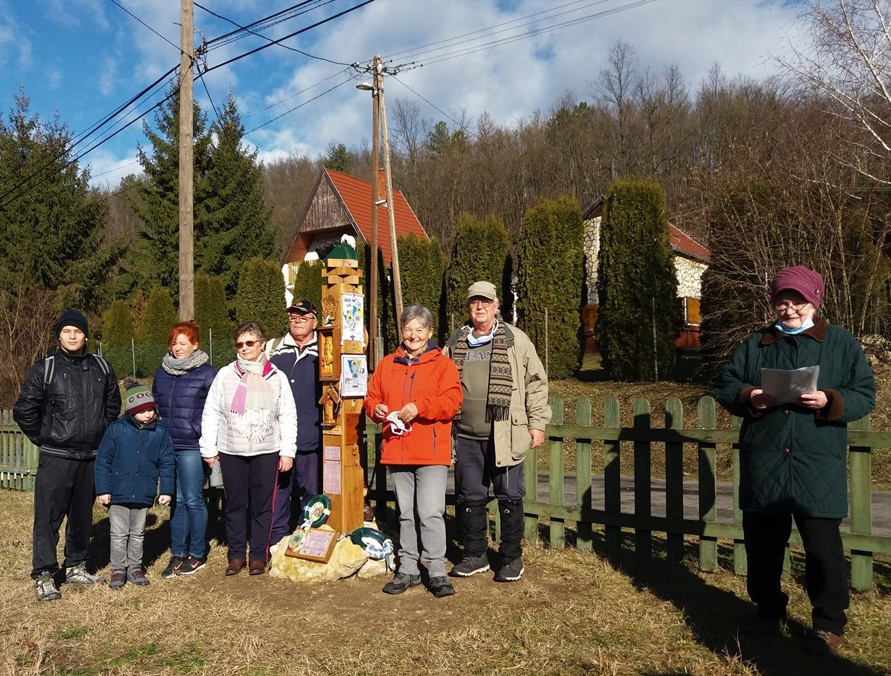

© 2012-2022 BAKANCSOS EGYÉNI TERMÉSZETJÁRÓK 1989
Túrával emlékeznek Gáti Lászlóra a pápai bakancsosok
A tájfutás meghonosítóját nem felejtik a bakancsos túrázók, évről évre visszaidézik munkásságát, érdemeit a róla elnevezett vízesésnél.
Gáti László